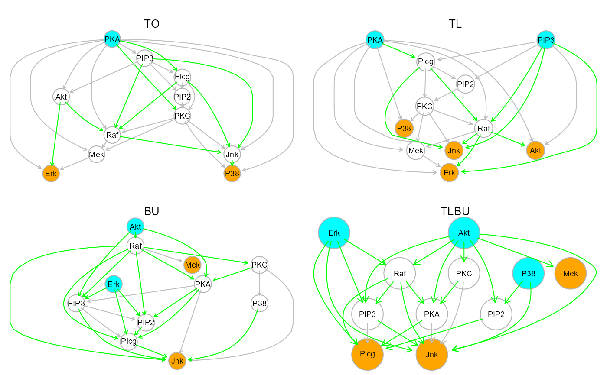
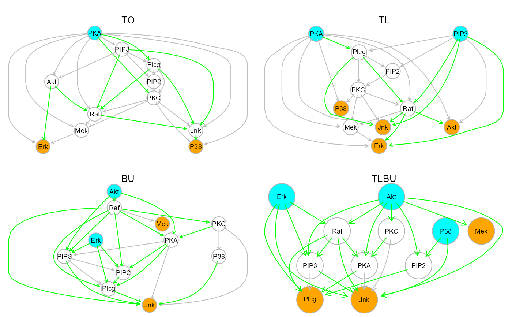

Two-step extraction of the optimal DAG from an input (or empty)
graph, using in step 1) graph topological order or bottom-up search order,
and in step 2) parent recovery with the LASSO-based algorithm (FHT, 2010),
implemented in glmnet.
Usage
SEMdag(
graph,
data,
LO = "TO",
beta = 0,
eta = 0,
lambdas = NA,
penalty = TRUE,
verbose = FALSE,
...
)Arguments
- graph
An igraph object or a graph with no edges (make_empty_graph(n=0)).
- data
A matrix whith n rows corresponding to subjects, and p columns to graph nodes (variables).
- LO
character for linear order method. If LO="TO" or LO="TL" the topological order (resp. level) of the input graph is enabled, while LO="BU" the data-driven bottom-up search of vertex (resp. layer) order is performed using the vertices of the empty graph. By default
LO = "TO".- beta
Numeric value. Minimum absolute LASSO beta coefficient for a new direct link to be retained in the final model. By default,
beta = 0.- eta
Numeric value. Minimum fixed eta threshold for bottom-up search of vertex (eta = 0) or layer (eta > 0) ordering. Use eta = NULL, for estimation of eta adaptively with half of the sample data. By default,
eta = 0.- lambdas
A vector of regularization LASSO lambda values. If lambdas is NULL, the
glmnetdefault using cross-validation lambdas is enabled. If lambdas is NA (default), the tuning-free scheme is enabled by fixing lambdas = sqrt(log(p)/n), as suggested by Janková and van de Geer (2015) and many others. This will both reduce computational time and provide the same result at each run.- penalty
A logical value. Separate penalty factors can be applied to each coefficient. This is a number that multiplies lambda to allow differential shrinkage. Can be 0 for some variables, which implies no shrinkage, and that variable is always included in the model. If TRUE (default) weights are based on the graph edges: 0 (i.e., edge present) and 1 (i.e., missing edge) ensures that the input edges will be retained in the final model. If FALSE the
glmnetdefault is enabled (all weights equal to 1). Note: the penalty factors are internally rescaled to sum p (the number of variables).- verbose
A logical value. If FALSE (default), the processed graphs will not be plotted to screen.
- ...
Currently ignored.
Value
A list of 3 igraph objects plus the vertex ordering:
"dag", the estimated DAG;
"dag.new", new estimated connections;
"dag.old", connections preserved from the input graph;
"LO", the estimated vertex ordering.
Details
The extracted DAG is estimated using the two-step order search approach.
First a vertex (node) or level (layer) order of p nodes is determined, and from
this sort, the DAG can be learned using in step 2) penalized (L1) regressions
(Shojaie and Michailidis, 2010). The estimate linear order are obtained from
a priori graph topological vertex (TO) or level (TL) ordering, or with a
data-driven Bottom-up (BU) approach, assuming a SEM whose error terms have equal
variances (Peters and Bühlmann, 2014). The BU algorithm first estimates the last
element (the terminal vertex) using the diagonal entries of the inverse covariance
matrix with: t = argmin(diag(Omega)), or the terminal layer (> 1 vertices) with
d = diag(Omega)- t < eta. And then, it determines its parents with L1 regression.
After eliminating the last element (or layer) of the ordering, the algorithm applies
the same procedure until a DAG is completely estimated. In high-dimensional data
(n < p), the inverse covariance matrix is computed by glasso-based algorithm
(FHT, 2008), implemented in glasso. If the input graph is
not acyclic, in TO or TL, a warning message will be raised, and a cycle-breaking
algorithm will be applied (see graph2dag for details).
Output DAG will be colored: vertices in cyan, if they are source nodes, and in
orange, if they are sink nodes, and edges in gray, if they were present in the
input graph, and in green, if they are new edges generated by LASSO screening.
References
Friedman J, Hastie T, Tibshirani R (2008). Sparse inverse covariance estimation with the graphical lasso. Biostatistics, 9(3), 432-441. <https://doi.org/10.1093/biostatistics/kxm045>
Friedman J, Hastie T, Tibshirani R (2010). Regularization Paths for Generalized Linear Models via Coordinate Descent. Journal of Statistical Software, Vol. 33(1), 1-22. <https://doi.org/10.18637/jss.v033.i01>
Shojaie A, Michailidis G (2010). Penalized likelihood methods for estimation of sparse high-dimensional directed acyclic graphs. Biometrika, 97(3): 519-538. <https://doi.org/10.1093/biomet/asq038>
Jankova J, van de Geer S (2015). Confidence intervals for high-dimensional inverse covariance estimation. Electronic Journal of Statistics, 9(1): 1205-1229. <https://doi.org/10.1214/15-EJS1031>
Peters J, Bühlmann P (2014). Identifiability of Gaussian structural equation models with equal error variances. Biometrika, 101(1):219–228. <https://doi.org/10.1093/biomet/ast043>
Grassi M, Tarantino B (2025). SEMdag: Fast learning of Directed Acyclic Graphs via node or layer ordering. PLoS ONE, Jan 08; 20(1): e0317283. <https://doi.org/10.1371/journal.pone.0317283>
Author
Mario Grassi mario.grassi@unipv.it
Examples
#Set function param
ig <- sachs$graph
X <- log(sachs$pkc)
group <- sachs$group
# DAG estimation (default values)
dag0 <- SEMdag(ig, X)
#> WARNING: input graph is not acyclic !
#> Applying graph -> DAG conversion...
#> DAG conversion : TRUE
#> Node Linear Ordering with TO setting
#>
sem0 <- SEMrun(ig, X, group)
#> NLMINB solver ended normally after 5 iterations
#>
#> deviance/df: 61.84444 srmr: 0.0701161
#>
#> Brown's combined P-value of node activation: 2.664535e-15
#>
#> Brown's combined P-value of node inhibition: 0.2368274
#>
# Graphs
old.par <- par(no.readonly = TRUE)
par(mfrow=c(2,2), mar=rep(1,4))
plot(sachs$graph, layout=layout.circle, main="input graph")
plot(dag0$dag, layout=layout.circle, main = "Output DAG")
#> Warning: vertex attribute color contains NAs. Replacing with default value 1
plot(dag0$dag.old, layout=layout.circle, main = "Inferred old edges")
#> Warning: vertex attribute color contains NAs. Replacing with default value 1
plot(dag0$dag.new, layout=layout.circle, main = "Inferred new edges")
#> Warning: vertex attribute color contains NAs. Replacing with default value 1
 par(old.par)
# Four DAG estimation
dag1 <- SEMdag(ig, X, LO="TO")
#> WARNING: input graph is not acyclic !
#> Applying graph -> DAG conversion...
#> DAG conversion : TRUE
#> Node Linear Ordering with TO setting
#>
dag2 <- SEMdag(ig, X, LO="TL")
#> WARNING: input graph is not acyclic !
#> Applying graph -> DAG conversion...
#> DAG conversion : TRUE
#> Node Linear Ordering with TL setting
#>
dag3 <- SEMdag(ig, X, LO="BU", eta=0)
#> Node Linear Ordering with BU setting
#>
dag4 <- SEMdag(ig, X, LO="BU", eta=NULL)
#> Node Linear Ordering with BU setting
#>
unlist(dag1$LO)
#> [1] "Erk" "Mek" "P38" "Jnk" "Raf" "PKC" "PIP2" "Akt" "Plcg" "PIP3"
#> [11] "PKA"
dag2$LO
#> [[1]]
#> [1] "Jnk" "P38" "Akt" "Erk"
#>
#> [[2]]
#> [1] "Mek"
#>
#> [[3]]
#> [1] "Raf"
#>
#> [[4]]
#> [1] "PKC"
#>
#> [[5]]
#> [1] "PIP2"
#>
#> [[6]]
#> [1] "Plcg"
#>
#> [[7]]
#> [1] "PKA" "PIP3"
#>
unlist(dag3$LO)
#> [1] "Jnk" "Plcg" "PIP2" "PIP3" "PKA" "P38" "PKC" "Mek" "Raf" "Akt"
#> [11] "Erk"
dag4$LO
#> [[1]]
#> [1] "Plcg" "Jnk"
#>
#> [[2]]
#> [1] "PKA" "PIP3" "PIP2"
#>
#> [[3]]
#> [1] "PKC" "Mek" "Raf" "P38"
#>
#> [[4]]
#> [1] "Akt" "Erk"
#>
# Graphs
old.par <- par(no.readonly = TRUE)
par(mfrow=c(2,2), mar=rep(2,4))
gplot(dag1$dag, main="TO")
gplot(dag2$dag, main="TL")
gplot(dag3$dag, main="BU")
gplot(dag4$dag, main="TLBU")

par(old.par)
par(old.par)
# Four DAG estimation
dag1 <- SEMdag(ig, X, LO="TO")
#> WARNING: input graph is not acyclic !
#> Applying graph -> DAG conversion...
#> DAG conversion : TRUE
#> Node Linear Ordering with TO setting
#>
dag2 <- SEMdag(ig, X, LO="TL")
#> WARNING: input graph is not acyclic !
#> Applying graph -> DAG conversion...
#> DAG conversion : TRUE
#> Node Linear Ordering with TL setting
#>
dag3 <- SEMdag(ig, X, LO="BU", eta=0)
#> Node Linear Ordering with BU setting
#>
dag4 <- SEMdag(ig, X, LO="BU", eta=NULL)
#> Node Linear Ordering with BU setting
#>
unlist(dag1$LO)
#> [1] "Erk" "Mek" "P38" "Jnk" "Raf" "PKC" "PIP2" "Akt" "Plcg" "PIP3"
#> [11] "PKA"
dag2$LO
#> [[1]]
#> [1] "Jnk" "P38" "Akt" "Erk"
#>
#> [[2]]
#> [1] "Mek"
#>
#> [[3]]
#> [1] "Raf"
#>
#> [[4]]
#> [1] "PKC"
#>
#> [[5]]
#> [1] "PIP2"
#>
#> [[6]]
#> [1] "Plcg"
#>
#> [[7]]
#> [1] "PKA" "PIP3"
#>
unlist(dag3$LO)
#> [1] "Jnk" "Plcg" "PIP2" "PIP3" "PKA" "P38" "PKC" "Mek" "Raf" "Akt"
#> [11] "Erk"
dag4$LO
#> [[1]]
#> [1] "Plcg" "Jnk"
#>
#> [[2]]
#> [1] "PKA" "PIP3" "PIP2"
#>
#> [[3]]
#> [1] "PKC" "Mek" "Raf" "P38"
#>
#> [[4]]
#> [1] "Akt" "Erk"
#>
# Graphs
old.par <- par(no.readonly = TRUE)
par(mfrow=c(2,2), mar=rep(2,4))
gplot(dag1$dag, main="TO")
gplot(dag2$dag, main="TL")
gplot(dag3$dag, main="BU")
gplot(dag4$dag, main="TLBU")

par(old.par)